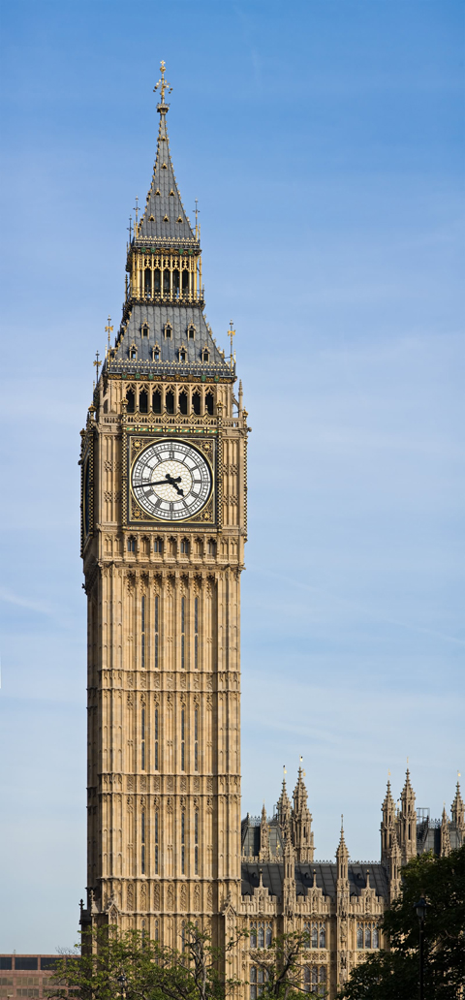
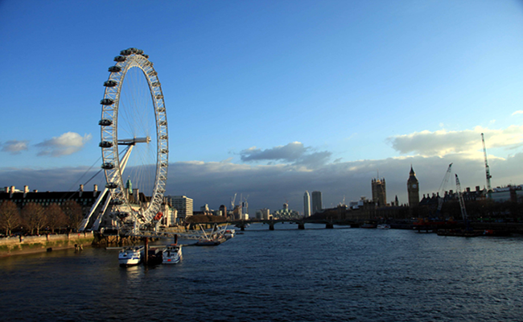
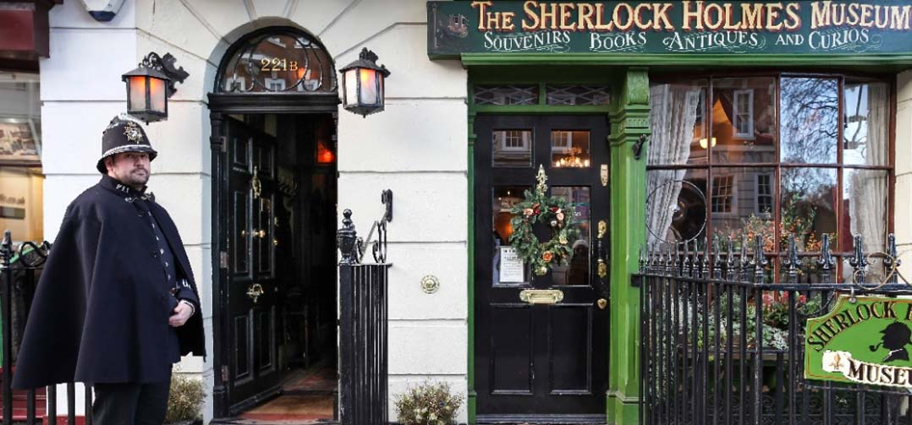
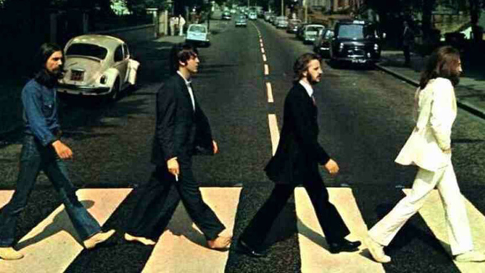

London Tour by Bus
London Tour by BusThere is nothing more interesting than visiting famous and fascinating landmarks introduced both in film and television in London. Many of these places can be admired in one day and their magnificence and scale simply impress. Guests can choose to walk between these landmarks to admire the many interesting attractions along either side of the road or take the subway or tourist bus routes to keep pace with the general feeling of the city.
Big Ben
Big Ben clock is located in the tower of Elizabeth at the northern end of Parliament House in Westminster, central London, next to the River Thames. This is one of the most famous symbols in London. Technically, Big Ben is the name given to the large bell inside the clock tower, weighing more than 13 tons. At night, the four clock tower lights were impressive. After a light hammer is inserted and the bell is installed, the clock bell becomes very interesting when listening to the clock bell when traveling in the UK.
River Thames
If you have arrived in England, you can not stop by once the poetic Thames River flows through the famous British capital and poetic landscapes are waiting for you to discover and experience beauty.
The Thames is branched by four river branches, Isis, Churn, Colne and Leach. The tributaries converge in the city of Oxford. The flow of the river in the direction of East London, opening some wide estuaries into the North Sea. Under the river, there is a world full of life. There are a large number of fish, invertebrate animals as well as the top predatory predators living below this river.
Buckingham Palace

The palace was built in 1701 and is surrounded by three parks, including the famous Hyde Park. It was built to serve special events of the country and for the Royal Family. It is also a major tourist destination in London, attracting many tourists. In the spring, the whole palace is full of yellow daffodils, a flower typical of the British countryside. When going from the palace door to the central lake, visitors can see a lot of wildflowers, there are all 350 types and lives of most animals, especially birds. The central lake is the most beautiful and quiet place of Buckingham Palace.
The Sherlock Holmes Museum
Sherlock Holmes Museum is a private museum, opened with the aim of commemorating the legendary detective in the 19th century. Although it bears the name of the house number 221B, the house is actually between two houses 237 and 241 on Barker St, London, England. This is also the museum for the first fictional character in the world. Visit the museum, visitors will see firsthand the items that the famous detective once used, his residence with the landlady Hudson and close friend - Dr. Watson.
Abbey Road
Although there is no big star or music star, every year thousands of people still gather before the Abbey in London (UK), which is the headquarters of Abbey Records. They cross the street, sing and hug each other to celebrate the fabulous day The Beatles released immortal albums, Abbey road. People come here every year to recollect and submerged under the Beatles music.
.gif)
.gif)